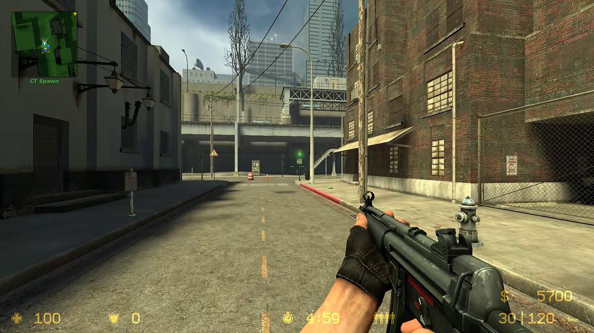

BLIND COMPARISON — WEAPON VIEWMODEL


Two screenshots of the same kind of scene, produced by different teams. Vote honestly: which one looks like a real shipped AAA game?

Two screenshots of the same kind of scene, produced by different teams. Vote honestly: which one looks like a real shipped AAA game?